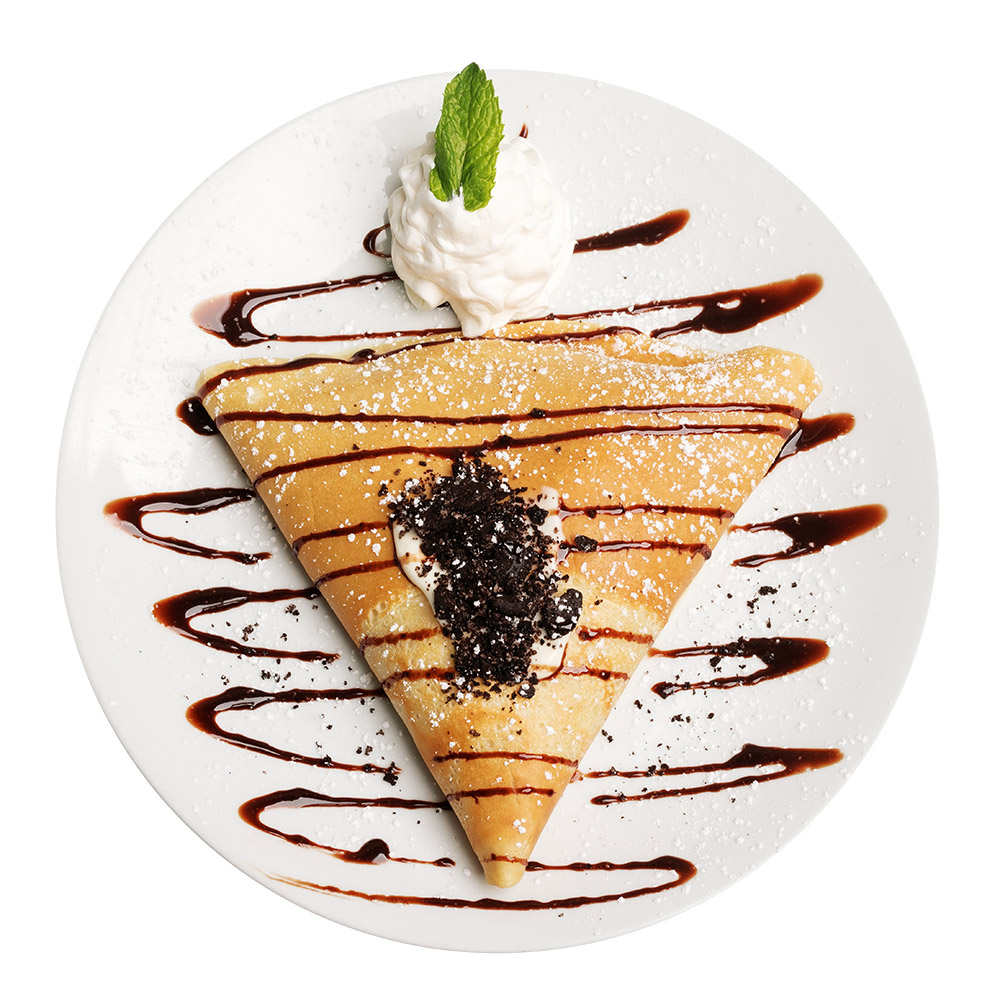
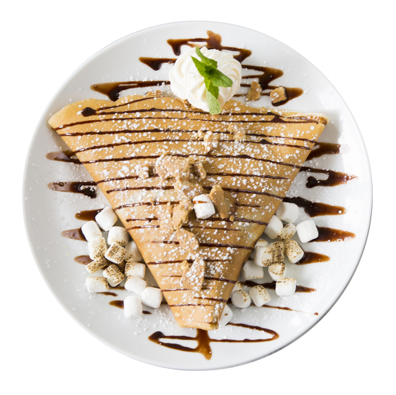

Place Batter ingredients in a blender. Pulse 10 times, or until smooth and lump free.
Place Batter in fridge for 1 hour.
Heat a non stick skillet over medium high heat. Add 1/4 tsp butter and melt.
Add 1/4 cup batter and quickly swirl to spread. Cook the first side for 1 minute or until
there are light golden brown patches. Flip and cook the other side for 30 seconds.
Slide out of the skillet onto a tray / board. Repeat with remaining crepes, overlapping them into the board.
Spread Nutella onto crepe - as much as you want! Cover half the crepe with strawberry slices, then fold into
half then into quarters. Transfer to plate. Sprinkle with icing sugar and serve with extra strawberries!

Cookies n Cream
Ingredients
Batter
1/4 cup flour
1/4 cupsmilk
1 eggs
1/4 tbsp / 10 g unsalted butter
1/3 cups of water
Pinch of salt
Fillings
1/2 tsp unsalted butter
Whipped cream
Whole Oreo cookies
Oreo Crumbs
Ingredients
Batter
1/2 cup flour
1/2 cups milk
2 eggs
1 tbsp / 10 g unsalted butter
2/3 cups of water
Pinch of salt
Fillings
1 tsp unsalted butter
Whipped cream
Whole Oreo cookies
Oreo Crumbs
Ingredients
Batter
5 cups flour
4 cups milk
5 eggs
5 tsp unsalted butter
2 cups of water
Pinch of salt
Fillings
2 tsp unsalted butter
Whipped cream
Whole Oreo cookies
Oreo Crumbs
Instructions
Mix eggs, flour, water, milk and salt until smooth.
Then let the batter rest for 5 minutes or up to 24 hours in the fridge.
Grease the pan using 1/2 tsp of oil.
Heat 5 inch pan until hot.
Place one Oreo cookie in the middle of the pan and pour about 1/4 cup of batter around the Oreo cookie.
Cook for 1 to 2 minutes, until the crepe is golden on the bottom.
Fill each crepe with whipped cream or cream cheese and sprinkle pieces of oreo cookie crumbs.
Fold or roll the crepes and they’re ready to be served!

Smore's
Ingredients
Batter
1 cups all-purpose flour
1 cup milk
1 eggs
1 tbsp unsalted melted butter
Pinch of salt
2 tablespoons granulated sugar
Fillings
graham cracker, as desired
chocolate, as desired
marshmallow, as desired
chocolate syrup, to garnish
Ingredients
Batter
2 cups all-purpose flour
3 cup milk
2 eggs
2 tbsp unsalted melted butter
Pinch of salt
4 tablespoons granulated sugar
Fillings
graham cracker, as desired
chocolate, as desired
marshmallow, as desired
chocolate syrup, to garnish
Ingredients
Batter
6 cups all-purpose flour
5 cup milk
6 eggs
3/4 cup unsalted melted butter
Pinch of salt
5 tablespoons granulated sugar
Fillings
graham cracker, as desired
chocolate, as desired
marshmallow, as desired
chocolate syrup, to garnish
Instructions
In a large bowl, combine flour, eggs, butter, and sugar, stirring until ingredients are slightly mixed. The batter should be very liquidy and have no lumps.
In a pan over medium heat, pour ⅓ cup (95 g) of the batter in the center and swirl the batter around the edges of the pan until set.
To know when the crepe is ready to flip, lift up one of the edges about ⅓ of the way. The bottom side should be golden brown. Flip the crepe.
Remove from heat and cover with a paper towel to make sure the crepes stay moist.
Add graham crackers, chocolate, and marshmallows to crepe. Fold crepe over twice.
Bake at 350˚F (175˚C) for 10 minutes.
Remove from heat and cool.
Serve with chocolate syrup and crumbled graham crackers.
Sugar Skull
Ingredients
Batter
1 cups all-purpose flour
1 egg
¼ cup butter, melted
2 tablespoons granulated sugar
1 cups milk
Fillings
Nutella for filling
2 oreo cookies(for the eyes)
2 to 3 different color frostings with tips
Ingredients
Batter
2 cups all-purpose flour
2 eggs
¼ cup butter, melted
3 tablespoons granulated sugar
2 cups milk
Fillings
Nutella for filling
4 oreo cookies(for the eyes)
2 to 3 different color frostings with tips
Ingredients
Batter
6 cups all-purpose flour
7 eggs
¼ cup butter, melted
5 tablespoons granulated sugar
6 cups milk
Fillings
Nutella for filling
12 oreo cookies(for the eyes)
2 to 3 different color frostings with tips
Instructions
Mix eggs, flour, water, milk and salt until smooth.
Then let the batter rest for 5 minutes or up to 24 hours in the fridge.
Grease the pan using 1/2 tsp of oil.
Heat 5 inch pan until hot.
Cook for 1 to 2 minutes, until the crepe is golden on the bottom.
Fill each crepe with Nutella.
Fold two sides of the crepe inward to create the traditional triangle shape.
Use the colored frosting with tips to squeeze dollops along the edge of the long part of the
crepe to create a flower crown.
For the eyes, squeeze frosting where you would want the eyes to be, then place the Oreo cookies so they can stay in place.
Using the Nutella or frosting you can create outlines of the nose and mouth.
Add a few more “flowers” and they’re ready to be served!